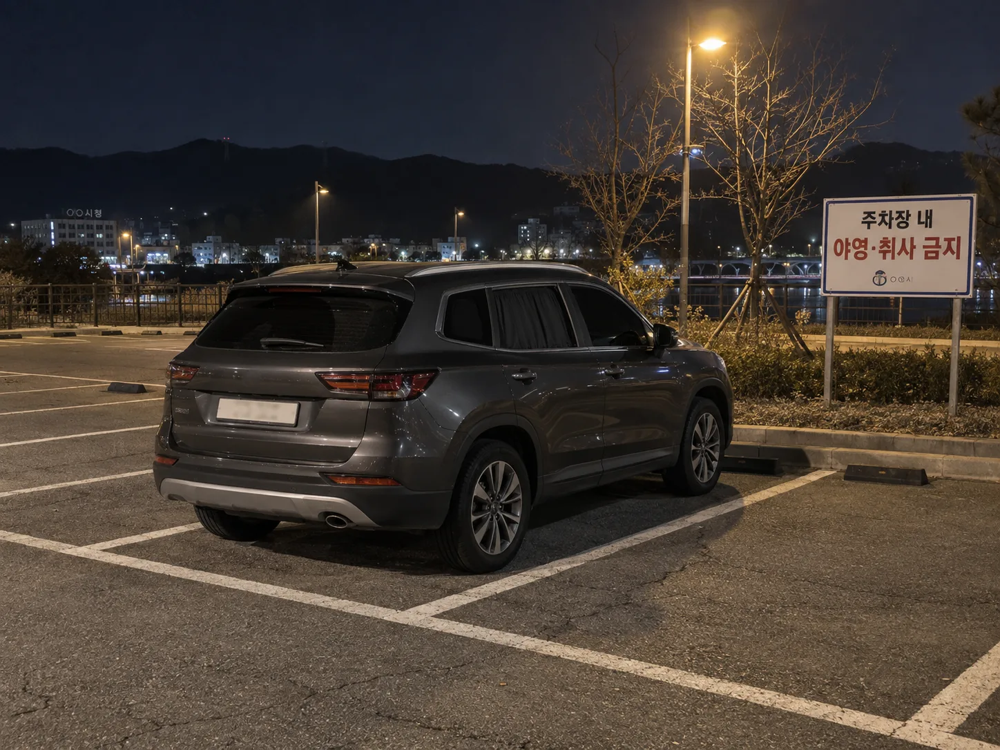
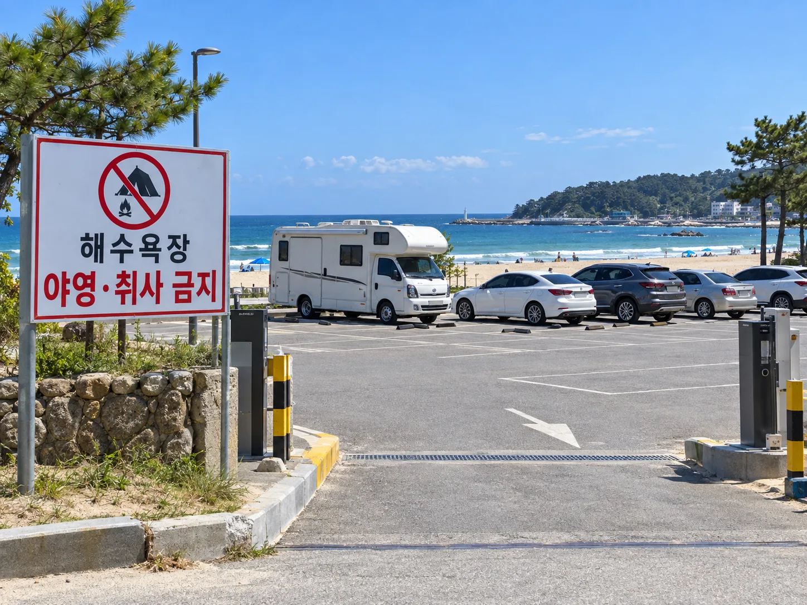

▲ 공영주차장에서의 '취침'과 '야영'의 경계는 생각보다 애매하다
"여기 하루만 세워두고 자면 안 되나요?"
차박을 준비하다 보면 누구나 한 번은 이 질문 앞에서 머뭇거린다. 공영주차장, 해수욕장 주차장, 고속도로 휴게소, 아파트 방문자 주차장, 사유지 공터… 다 '주차장'이라고 부르지만 법적으로는 전혀 다른 공간이다. 2024년 9월 20일부터 시행된 개정 주차장법으로 공영주차장의 기준이 크게 바뀌었고, 장소마다 근거 법령과 과태료도 제각각이다. 실제로 애매해서 자주 묻는 장소 7곳을 질문 형태로 정리했다.
1. 공영주차장에서 자도 되나?
결론부터 말하면, 차 안에서 '그냥 자는 것'과 '야영하는 것'은 법적으로 다르게 취급되지만 실무에서는 거의 구분 없이 단속된다. 2024년 9월 20일 시행된 개정 「주차장법」 시행령·시행규칙은 국가·지자체·공공기관은 물론 지방공사·지방공단이 설치한 공영주차장에서 야영행위, 취사행위, 불을 피우는 행위를 명시적으로 금지했다. 국토교통부는 차박 인구 증가로 주차 공간 부족, 소음, 쓰레기 민원이 늘어난 것을 개정 배경으로 밝혔다.
과태료는 1차 위반 30만 원, 2차 위반 40만 원, 3차 이상 위반 시 50만 원이다. 단순히 시트를 젖히고 눈만 붙이는 수준이라면 단속 재량의 영역이지만, 창문에 암막 커튼을 치거나 어닝·테이블을 펼치는 순간 '야영행위'로 간주될 가능성이 커진다. 지자체별로 조례를 더해 단속을 강화한 곳도 있어, 같은 '공영주차장'이라도 지역마다 체감 강도가 다르다.
📍 확인 방법
방문 예정 지역의 공영주차장 현황과 규정은 지자체 홈페이지에서 확인할 수 있다. 국토교통부 정책 발표 원문은 정책브리핑에서 볼 수 있다. 정책브리핑 보도자료 바로가기
2. 해수욕장 주차장은 며칠까지 세워도 되나?
해수욕장 인근 주차장도 공영주차장이라면 위 주차장법이 그대로 적용되고, 여기에 「해수욕장법」과 지자체 조례가 추가로 겹친다. 해수욕장법은 지정된 장소 밖에서의 야영·취사를 금지하고 있으며, 관리청이 무단 설치물을 직접 제거할 수 있는 근거도 2023년 6월 28일부터 시행됐다. 즉 텐트나 타프를 펼치면 해수욕장법 위반, 주차장 안에서 취사·야영을 하면 주차장법 위반이 이중으로 적용될 수 있다.
지자체별 대응은 차이가 크다. 예컨대 부산 기장군은 어항·해수욕장·호안도로 일대에서 2인 이상이 모여 야영·취사·음주를 하는 행위를 금지 조례로 규정하고, 기존에 무료로 개방하던 공영주차장을 유료화하는 방식으로 장기 체류형 차박을 억제했다. 언론에 보도된 사례를 보면 공용 주차장 무단취침만으로도 10만 원 상당의 과태료가 부과된 경우가 있어, "하루 정도는 괜찮겠지"라는 판단은 위험하다.

▲ 해수욕장 주차장은 해수욕장법과 주차장법이 함께 적용돼 이중으로 단속 대상이 될 수 있다 ⓒ 카프리즘
3. 고속도로 휴게소는 며칠까지 주차해도 되나?
휴게소는 '쉬어가는 곳'이지 '숙박하는 곳'이 아니다. 고속도로 통행권의 유효시간은 24시간이며, 이 시간을 넘겨 휴게소나 고속도로 구간에 차량을 세워두면 원칙적으로 최장 거리 기준 통행료가 재징수된다. 고장 수리 영수증이나 휴게소 발급 주차증명서가 있으면 예외를 인정받지만, 단순히 차박을 위해 며칠씩 주차하는 경우는 이 예외에 해당하지 않는다.
한국도로공사는 정당한 사유 없이 장시간 방치된 차량을 단속 대상으로 보고, 필요 시 견인 조치를 하며 이 경우 과태료와 별도로 견인비·보관료까지 운전자가 부담하게 된다. 최근에는 AI 카메라 기반 무인 감시 체계까지 도입돼 하루 이틀을 넘기는 '휴게소 차박'은 사실상 단속 리스크가 크다고 보는 게 맞다.
▲ 휴게소는 잠깐 쉬어가는 곳이지, 며칠씩 머무는 숙박 공간으로 설계돼 있지 않다 ⓒ 카프리즘
4. 국립공원·휴양림 주차장에서 차박해도 되나?
「자연공원법」은 국립·도립·군립공원 내에서 지정된 장소(야영장·대피소 등) 밖의 야영행위를 명확히 금지한다. 위반 시 제86조에 따라 야영행위는 50만 원 이하, 취사행위는 20만 원 이하의 과태료가 부과된다. 공원 관리사무소가 지정한 정식 야영장이나 사전 예약이 필요한 오토캠핑장이 아니라면, 주차장에 차를 세우고 차박을 하는 것 자체가 단속 대상이 될 수 있다.
다만 국립공원 내에서도 예약제로 운영되는 일부 오토캠핑장·차박존은 합법적으로 이용할 수 있다. 국립공원공단 예약 시스템을 통해 사전에 자리를 확보하면 되므로, 방문 전 반드시 지정 야영지 여부부터 확인하는 것이 순서다.
5. 아파트 방문자 주차장은?
아파트 단지 내 주차장은 도로교통법이 아니라 「공동주택관리법」과 그 단지의 관리규약이 우선 적용되는 사적 공간이다. 공동주택관리법 시행령 제14조 제2항은 단지 내 주차장의 유지·운영 기준을 입주자대표회의 의결사항으로 규정하고 있다. 즉 방문 차량 등록제, 이용 시간 제한, 초과 시 요금 부과 같은 통제가 관리규약을 통해 폭넓게 허용된다.
방문자 신분으로 며칠씩 차를 세워두고 차박을 하는 행위는 대부분의 단지 관리규약상 '방문 목적 외 이용'에 해당해 위반금이나 강제 견인 조치의 대상이 된다. 반대로 입주민이라도 배정된 주차면이 아닌 공용 부대시설을 영리·독점적으로 장기 점유하는 것 역시 관리규약 위반으로 다뤄지는 경우가 많다. 단지마다 규정이 다르므로 관리사무소에 문의하는 것이 가장 확실하다.
▲ 아파트 방문자 주차장은 도로교통법이 아니라 단지 관리규약이 우선 적용되는 사적 공간이다 ⓒ 카프리즘
6. 사유지·캠핑장 예약 없이 주차만 해도 되나?
"주차만 하는 거니까 괜찮겠지"는 사유지에서는 통하지 않는다. 사유지가 단순한 임야나 나대지라면 형법상 주거침입죄까지는 성립하지 않지만, 소유자나 관리자가 퇴거를 요구했는데도 응하지 않으면 형법 제319조 퇴거불응죄가 성립할 수 있다. 법정형은 주거침입죄와 동일하게 3년 이하의 징역 또는 500만 원 이하의 벌금이다. 예약제로 운영되는 사설 캠핑장·차박지에 예약 없이 무단으로 들어가 주차하는 경우도 마찬가지로 퇴거불응·재물손괴(시설 훼손 시)의 문제가 생길 수 있고, 청소비 등 손해배상 청구 대상이 되기도 한다.
반대로 소유자가 명시적으로 허용한 사설 차박지·글램핑장이라면 문제가 없다. 관건은 '아무도 없으니 괜찮겠지'가 아니라 소유자의 명시적 또는 묵시적 동의 여부다.
7. 일반 도로 갓길·골목길에 세우고 자도 되나?
가장 기본이 되는 조항은 「도로교통법」 제32조(정차 및 주차의 금지)와 제33조(주차금지의 장소)다. 교차로·횡단보도·건널목 5~10m 이내, 소방시설 인근, 어린이보호구역 등 법이 정한 구역에서는 애초에 정차·주차 자체가 금지된다. 이런 금지 구역이 아닌 일반 갓길이나 골목이라 해도, 야간에 비상등도 켜지 않은 채 정차해 잠을 자는 행위는 다른 차량의 통행을 방해하거나 사고 위험을 키워 별도의 단속 대상이 될 수 있다.
결국 도로 위에서의 취침은 '주차 자체가 합법인 구역인가'와 '실제로 통행을 방해하는가' 두 가지를 함께 따져야 한다. 애매하다면 인근 공영주차장이나 정식 차박지로 이동하는 편이 안전하다.
| 장소 | 가능 여부 | 근거 법령 | 과태료·제재 |
|---|---|---|---|
| 공영주차장 | 취침만 회색지대, 야영·취사 금지 | 주차장법 시행령·시행규칙(2024.9.20 시행) | 1차 30만·2차 40만·3차 이상 50만 원 |
| 해수욕장 주차장 | 지정 구역 외 야영·취사 금지 | 해수욕장법, 지자체 조례 | 지자체별 상이(사례: 무단취침 10만 원) |
| 고속도로 휴게소 | 단기 휴식만, 장기 숙박 불가 | 통행권 유효시간(24시간), 도로공사 관리 규정 | 통행료 재징수, 견인·보관료 |
| 국립·도립공원 | 지정 야영장 외 전면 금지 | 자연공원법 제86조 | 야영 50만 원 이하, 취사 20만 원 이하 |
| 아파트 방문자 주차장 | 관리규약상 대부분 불가 | 공동주택관리법 시행령 제14조, 단지 관리규약 | 위반금·강제 견인(단지별 상이) |
| 사유지·미예약 캠핑장 | 소유자 동의 없으면 불가 | 형법 제319조(퇴거불응죄) | 3년 이하 징역 또는 500만 원 이하 벌금 |
| 일반 도로 갓길 | 금지구역 아니면 정차는 가능하나 취침 부적합 | 도로교통법 제32조·제33조 | 구역별 상이, 안전 문제 별도 |
8. 정리 — "잠깐이니까"가 가장 위험한 판단이다
차박 자체가 불법은 아니다. 문제는 장소다. 같은 '주차장'이라는 이름이 붙어 있어도 공영주차장·해수욕장·휴게소·아파트·사유지는 적용되는 법이 전부 다르고, 과태료 수준도 10만 원대부터 형사처벌까지 격차가 크다. 가장 안전한 기준은 지정된 야영장·차박지에서만 취사·야영 장비를 펼치고, 그 외 장소에서는 '잠깐 쉬어가는' 수준을 넘기지 않는 것이다. 방문 전 지자체·관리사무소·공단 홈페이지에서 최신 규정을 한 번 더 확인하는 습관이 과태료보다 훨씬 저렴하다.